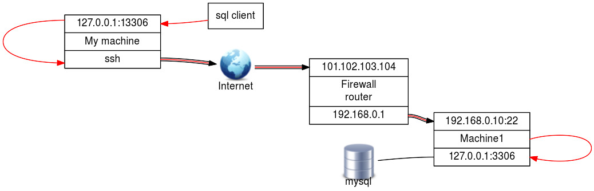
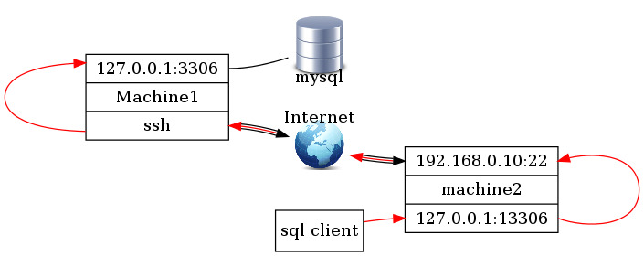

Secure shell (SSH) (212.3)
Secure shell (SSH) (212.3)¶
Candidates should be able to configure and secure an SSH daemon. This objective includes managing keys and configuring SSH for users. Candidates should also be able to forward an application protocol over SSH and manage the SSH login.
Key Knowledge Areas¶
-
OpenSSH configuration files, tools and utilities
-
Login restrictions for the superuser and the normal users
-
Managing and using server and client keys to login with and without password
-
Usage of multiple connections from multiple hosts to guard against loss of connection to remote host following configuration changes
Terms and utilities¶
-
ssh -
sshd -
/etc/ssh/sshd_config -
/etc/ssh/ -
Private and public key files
-
PermitRootLogin, PubkeyAuthentication, AllowUsers, PasswordAuthentication, Protocol
SSH client and server¶
ssh is a client program for logging into a remote ssh sshd machine and
for executing commands on a remote machine.
sshd is the server (daemon) program for ssh.
Together these two programs replace rlogin and rsh, providing secure
encrypted communications between two untrusted hosts on an insecure
network.
To copy files over an insecure network the scp command can be used.
Scp stands for Secure CoPy. It uses ssh for scp data transfer.
SSH (Secure SHell) uses digital keys for both data encryption and authentication.
Keys and their purpose
Two types of keys are used: host and user ones. These will be discussed in the next paragraphs. sshkeys
Host keys¶
There is a slight difference between the SSH protocol versions 1 and 2 in socalled forward security. sshHost Keys
SSH protocol version 1
-
This version only supports RSA keys. Each node has a host key (normally 2048 bits) sshprotocol version 1 to identify it. When the daemon is started, an additional server key (normally 768 bits) is generated. RSA-key sshRSA It is not stored on disk and recreated every hour when used.
When a client connects, the server daemon responds with its public host and server keys. The client compares the RSA host key against its own database to verify that it has not changed. The client then generates a 256 bit random number. It encrypts this random number using both the host and server keys, and sends the encrypted number to the server. Both sides then use this random number as a key that is used to encrypt all further communications in the session. The rest of the session is encrypted using a conventional cipher, currently Blowfish or 3DES, with 3DES being used by sshBlowfish default. The client selects the encryption algorithm from those offered by the server.
SSH protocol version 2
-
This protocol version is the default and it supports DSA, ECDSA and RSA keysssh. Forward security is provided through a Diffie-Hellman key agreement. This key agreement results in a shared session key.
The rest of the session is encrypted using a symmetric cipher, currently 128-bit AES, Blowfish, 3DES, CAST128, Arcfour, 192-bit AES or 256-bit AES. The client selects the encryption algorithm to use from those offered by the server. Additionally, session integrity is provided through a cryptographic message authentication code ( hmac-md5, hmac-sha1, umac-64, umac-128, hmac-ripemd160, hmac-sha2-256 or hmac-sha2-512).
Finally, in both versions of the protocol, the server and the client enter an authentication dialog. The client tries to authenticate itself using host-based authentication, public key authentication, challange-response authentication, or password authentication. If possible, select SSH protocol version 2 as the only one to use.
User keys, public and private¶
ssh implements the RSA authentication mechanism sshUser Keys
automatically. The user creates an RSA key pair by running ssh-keygen.
This stores the private key in ssh-keygen $HOME/.ssh/id_rsa and the
public key in sshid_rsa sshid_rsa.pub $HOME/.ssh/id_rsa.pub in the
user's home directory. The user should then copy the id_rsa.pub into
the $HOME/.ssh/authorized_keys file in his home sshauthorized_keys
directory on the remote machine:
1 | |
The authorized_keys file has only one key per line which can be very
long. After this, the user can log in without giving the password.
Instead of using rsa, dsa can also be used. The names of the keys
reflect the kind of keys you created. Make sure the ˜/.ssh directory and
the files in it have the proper rights. Use for example 700 on the .ssh
directory and 600 on the files in it. If you don't, in some situations
you can't login using digital keys.
Configuring sshd¶
Configuring sshd can be done by using command-line options or by
editing the sshconfigure sshd sshsshd_config sshd_config configuration
file /etc/ssh/sshd_config.
-4
- Forces sshd to use IPv4 addresses only.
-6
- Forces sshd to use IPv6 addresses only.
-b bits
- Specifies the number of bits in the ephemeral protocol version 1 server key (default 1024).
-C connection_spec
- Specify the connection parameters to use for the -T extended test mode.
-D
- When this option is specified,
sshdwill not detach and does not become a daemon. This allows easy monitoring of sshd.
-d Debug Mode
- The server sends verbose debug output to the system log, and does not put itself in the background.
-e
- When this option is specified, sshd will send the output to the standard error instead of the system log.
-f config_file
- Specifies the name of the configuration file. The default is /etc/ssh/sshd_config. sshd refuses to start if there is no configuration file.
-g login_grace_time
- Gives the grace time for clients to authenticate themselves (default 120 seconds).
-h host_key_file
- Specifies a file from which a host key is read.
-i
- Specifies that sshd is being run from
inetd. sshd is normally not run from inetd because it needs to generate the server key before it can respond to the client, and this may take tens of seconds.
-k key_gen_time
- Specifies how often the ephemeral protocol version 1 server key is regenerated (default 3600 seconds, or one hour).
-o option
- Can be used to give options in the format used in the configuration file. This is useful for specifying options for which there is no separate command-line flag.
-p port
- Specifies the port on which the server listens for connections (default 22). Multiple port options are permitted.
-q
- Quiet mode. Nothing is sent to the system log. Normally the beginning, authentication, and termination of each connection is logged.
-T
- Extended test mode. Check the validity of the configuration file, output the effective configuration to stdout and then exit.
-t
- Test mode. Only check the validity of the configuration file and sanity of the keys. This is useful for updating sshd reliably as configuration options may change.
-u len
- This option is used to specify the size of the field in the utmp structure that holds the remote host name.
The sshd configrations file in the /etc/ssh/sshd_config directory can
also be used to configure sshd. This file should be writable by root
only, but it is recommended (though not necessary) that it is
world-readable.
Allow or deny root logins¶
The allowing or denying of root logins is done by setting the keyword PermitRootLogin in the configuration file to the appropriate value. To make it more difficult for someone to gain full access, you shouldn't allow root logins. Without the possibility of remote root access someone who wants to get root access on a remote server has to get access via a regular user first. Which is an additional layer of security.
yes
- This is the default. When set to yes, root can login using
sshPermitRootLogin
ssh.
no
- When set to no, root cannot login using
ssh.
without-password
- This means that password authentication is disabled for root.
forced-commands-only
- This means that root can only use
sshto login to the system with public key authentication and execute the commands that are given on the command line. The allowed command(s) must be added to the public key(s) in the~/.ssh/authorized_keysfile. For example, if you add command=\"/bin/date\" at the beginning of your public key line on SERVERA, only the date command will be allowed for a login using that public key. If you executessh root@SERVERAthen only the date command will be executed on the remote system. (This may be useful for taking remote backups even if root login is normally not allowed.) Please read the man pages for more information.
Allow or deny non-root logins¶
There are a number of keywords that can be used to influence the
behaviour of sshd in relation to logins.
AllowUsers
- This keyword is followed by a list of user names, separated sshAllowUsers by spaces. Login is allowed only for usernames that match one of the patterns. You can use "*" and "?" as wildcards in the patterns.
DenyUsers
- This keyword is followed by a list of user names, separated sshDenyUsers by spaces. User names that match one of the patterns cannot login. You can use "*" and "?" as wildcards in the patterns.
AllowGroups
- This keyword is followed by a list of group names, separated sshAllowGroups by spaces. Login is allowed only for users who are a member of one or more groups that match one of the patterns. You can use "*" and "?" as wildcards in the patterns.
DenyGroups
- This keyword is followed by a list of group names, separated sshDenyGroups by spaces. Login is not allowed for users who are a member of one or more groups that match one of the patterns. You can use "*" and "?" as wildcards in the patterns.
PasswordAuthentication
- sshPasswordAuthentication Specifies whether password authentication is allowed. The default is \"yes\".
Protocol
- sshProtocol Specifies the protocol versions sshd supports. The possible values are \"1\" and \"2\". Multiple versions must be comma-separated. The default is \"2,1\". Note that the order of the protocol list does not indicate preference, because the client selects among multiple protocol versions offered by the server. Specifying \"2,1\" is identical to \"1,2\". Unless there are serious arguments for using protocol version \"1\", only use version \"2\" because it is far more secure.
UsePAM
- Enables the Pluggable Authentication Modules interface. If set to "yes" it will enable PAM authentication using ChallengeResponseAuthentication and PasswordAuthentication in addition to PAM account and session module processing for all authentication types. The default is "yes".
ChallengeResponseAuthentication
- Specifies whether challenge-response authentication is allowed (e.g., via PAM or through authentication styles supported in login.conf(5)). The default is "yes".
If you want to fully disable password based logins, the following
sshd_config settings should be set to no:
-
PasswordAuthentication
-
ChallengeResponseAuthentication
-
UsePAM
Enabling or disabling X forwarding¶
This topic stays here to give you some information about this topic but it isn't anymore in the Key Knowledge Areas of lpi.org.
There are a number of keywords that can be used to influence the
behaviour of sshd in relation to the X Windows sshThe X Window System
system.
X11Forwarding
- X11 forwarding is a mechanism where the program runs on one
sshX11Forwarding machine and the X Windows output is shown on
another machine. The command
ssh -X remotewill set theDISPLAYin the server-shell tolocalhost:num:0which is actually the tunnel-endpoint which is mapped back to the originalDISPLAYin the client context. This tunnel is secured using ssh. X11Forwarding can be set to yes or no. The default is no.
X11DisplayOffset
- This specifies the first display number that is available for the
X11 forwarding of
sshd. This prevents sshX11DisplayOffsetsshdfrom interfering with real servers. The default is 10.
XAuthLocation
- This specifies the fully qualified location of the
xauthcommand. The default location is sshXAuthLocation/usr/bin/X11/xauth.xauthis used to edit and display the authorization information used in connecting to the X server.
If you connect to machine B from machine A using
ssh your_account@machineB and start an xterm for instance, the
process will run on machine B and the X output will be transferred
through the SSH tunnel to machine A. To display the terminal, machine B
will connect to the display on localhost that's opened by SSH for X11
Forwarding. SSH will forward the X-connection to X server on machine A
where it will be displayed in your local display. Because the X output
is seemingly created locally no xhost settings have to be changed to
enable displaying the content.
To enable X11 forwarding this also has to be enabled on the client side. ForwardX11 has to be set to \"yes\" in the SSH configuration on the client, or on the command line when initiating the connection.
Passwordless authentication¶
Using SSH there are different ways for authentication. One way to do this is by using a public/private keypair for authentication. If public key authentication is enabled users can login without having to use a password. When trying to authenticate with a keypair the user will be asked for the passphrase (or ssh_agent will be queried). Also, passphraseless keys can be used (e.g., for automated sessions).
Note on using passphraseless keys: because no passphrase is needed to use a passphraseless key, anyone who has access to the key can use it. This poses a serious security risk. The impact of connections with passphraseless keys should be reduced by allowing these connections only with forced commands and preferably from a limited set of clients, (see man authorized_keys).
PubkeyAuthentication
- sshPubkeyAuthentication This parameter specifies whether public key authentication is allowed. The default is \"yes\". Note that this option applies to protocol version 2 only.
ssh-agent
This objective was moved to LPIC-1.
ssh-agent is a program to hold private keys used for sshssh-agent
public-key authentication (RSA, DSA). The idea is that ssh-agent is
started in the beginning of an X-session or a login session, and all
other windows or programs are started as clients to the ssh-agent
program. Through the use of environment variables the agent can be
located and automatically used when logging in to other machines with
ssh.
Enable agent forwarding¶
sshForwardAgent In ssh_config (system wide or in $HOME/.ssh/config)
set ForwardAgent to \"yes\".
Login session¶
Add the following two lines to your $HOME/.bash_profile file or
equivalent sshssh-add (depending on the shell you are using) to be able
to login without having to type your password each time:
1 2 | |
The eval `ssh-agent` sets a number of environment variables. In
fact, ssh-agent returns the strings needed to set them and eval sees
to it that they get set.
The ssh-add command without parameters reads the contents of the file
$HOME/.ssh/id_rsa (or id_dsa) which contains the private key, as
described earlier. You will be prompted to enter your passphrase, if
necessary.
When the user logs out from the system, the program ssh-agent must be
terminated. To see to it that this happens automatically, add the
following line to your .bash_logout file or equivalent, depending on
the shell you are using:
1 | |
The process id of of the current agent is determined by examining the
contents of the environment variable $SSH_AGENT_PID, which has been
sshSSH_AGENT_PID set by the eval `ssh-agent` command.
Enabling X-sessions with ssh-agent¶
There are several ways to do this, depending on how X is started and sshX Sessions which display manager you are using.
If you start X from the command line with startx, you can type
ssh-agent startx, open a terminal window in X and type ssh-add,
which will prompt you for the passphrase and load your keys.
Tunneling an application protocol over ssh with portmapping¶
Description¶
Using port forwarding, SSH will bind to a port and tunnel all traffic directed at that port through the SSH connection. Traffic is forwarded to the host at the other end of the SSH connection. The remote host may be the server on which the SSH connection terminates, but traffic can also be forwarded to another host. Port forwarding can be configured in both directions: local to remote, but also remote to local.
The syntax is:
1 | |
Example¶
As an example (example 1), consider the situation shown in the picture. We are working on MyMachine, and we want to connect to the mysql server on Machine 1. The firewall doesn't allow sql connections. The firewall has port forwarding configured so that incoming traffic on port 22 from the internet will be forwarded to port 22 on Machine1. John is an user on Machine1.

First open the tunnel by running ssh with the \"-L\"
option:
1 | |
Then run your application, connecting to the local port that is forwarded by the SSH tunnel:
1 | |
You are now connected to the remote MySQL server without the need to enable SQL connections over the network.
Another example (example 2) would be where one side of the connection
wants/needs to initialize the SSH connection to enable the remote party
to connect back through the tunnel. In this simplified example an ssh
tunnel is started on Machine1 to machine2 with the -R. Then the sql
client on machine2 can connect on localhost:13306 and gets a connection
with the mysql server on port 3306 through the SSH tunnel.

The tunnel will stay open as long as the SSH session is running or as long as there is a tunneled session going through it. This means there are two ways of working with SSH tunneling:
-
open an SSH session with port forwarding and keep it open for as long as you need it. This is useful if you want to be able to reconnect through the tunnel without the need to open a new SSH session. Useful for connecting to a remote host and initializing a tunnel in the reversed direction (example 2).
-
open an SSH connection with port forwarding in the background and keep it open just long enough to be able to initialize the connection through the tunnel. (\"ssh -f -L \<your:port:definition> remote_user\@remote_host sleep 10 ; \<your application>\").